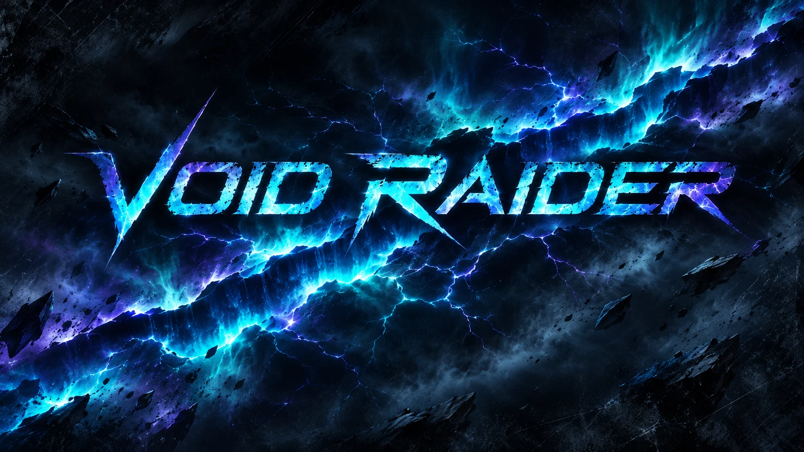
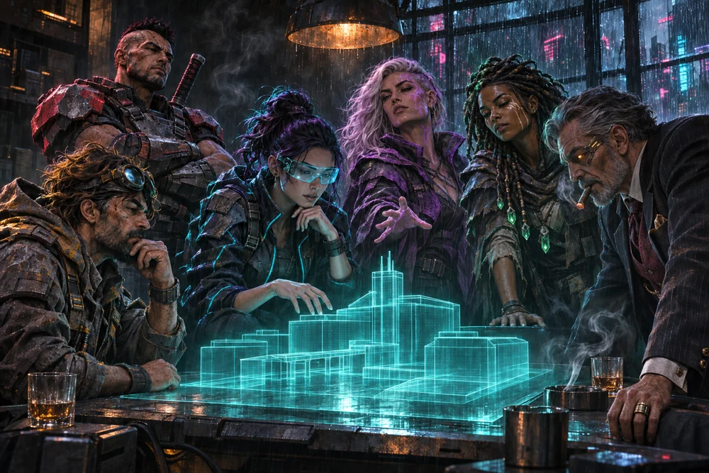
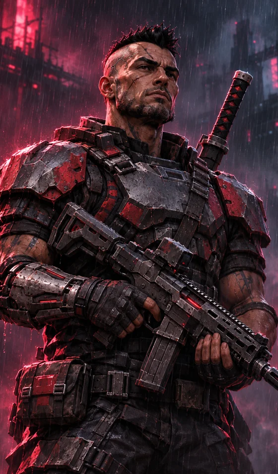
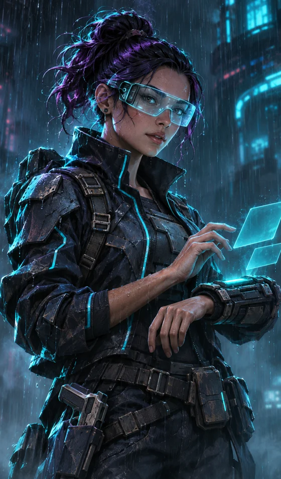
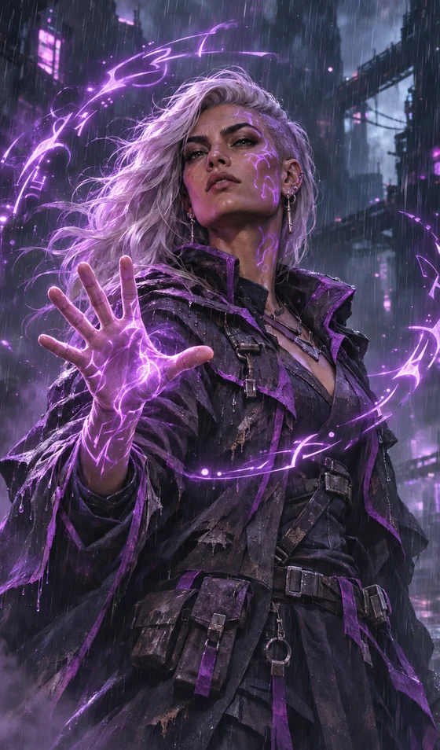
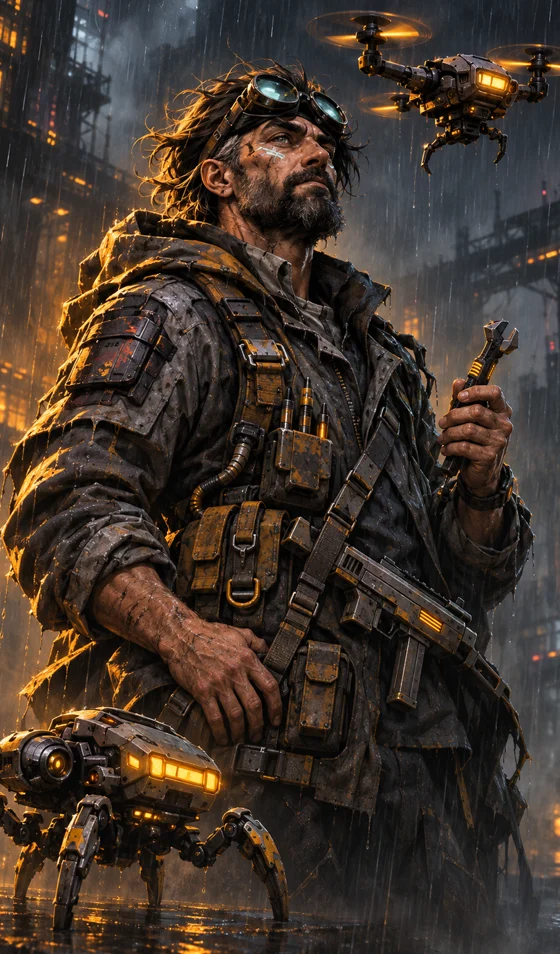
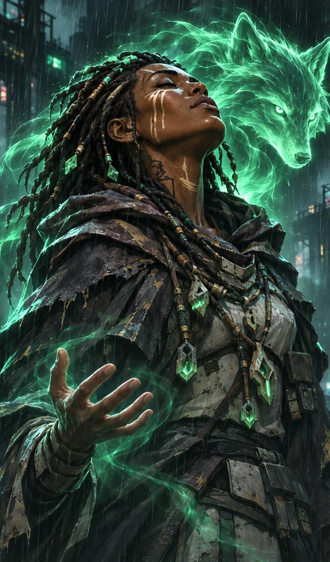
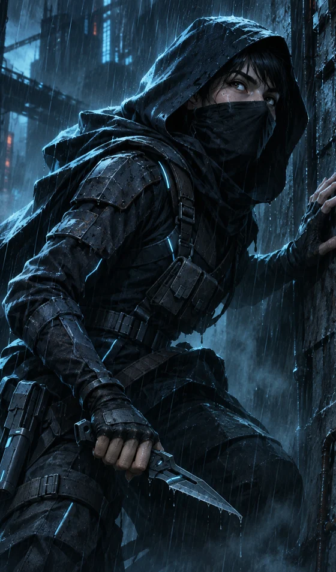
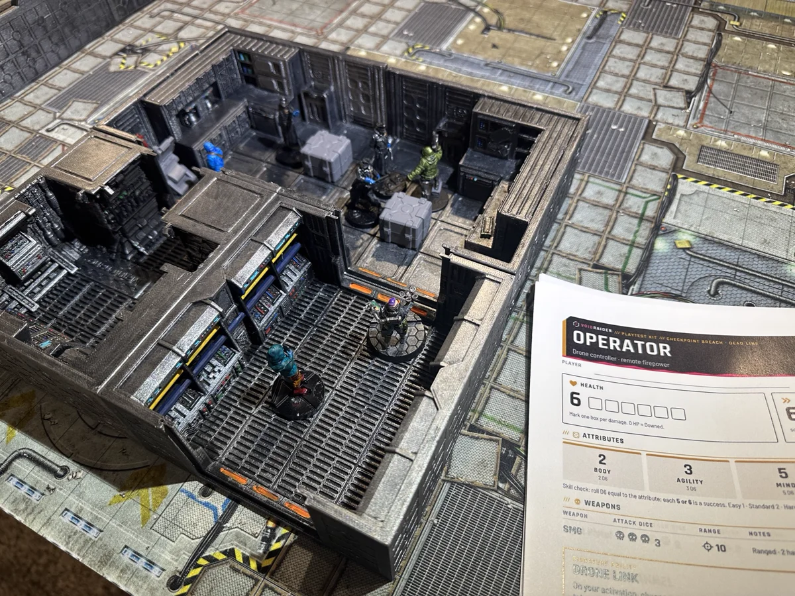
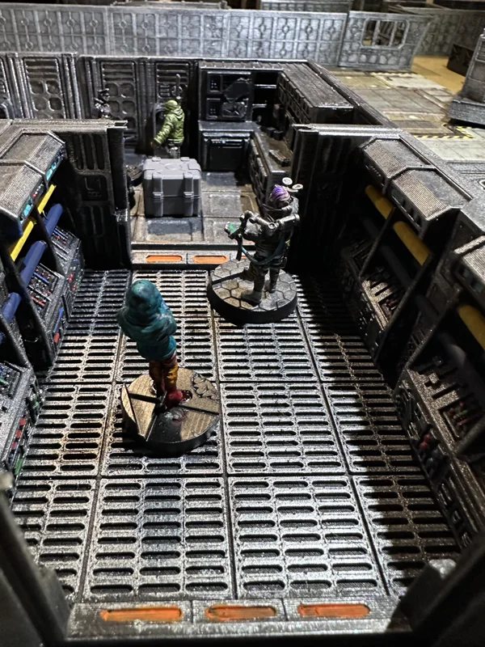

Playtest 001
Checkpoint Breach
Infiltrate a corporate security checkpoint, retrieve a stolen encrypted data archive, and make it back to extraction.
Four pregenerated heroes · 45–60 minute target

A cyberpunk-fantasy tabletop miniatures game. Take on dangerous jobs with a crew of cybernetic operatives, hackers, and spellcasters.
See the first missionThe Rupture tore open Rifts to the Void and fractured civilization. In the decades since, Denver has grown into an autonomous metropolis along the Colorado Front Range. Its civilian government and powerful corporations contest control, while Denver depends on an uneasy partnership with the federal military capital in Cheyenne.
Voidraider crews take jobs in corporate facilities, city streets, and contested territory. Some work brings them to the edge of a Rift or into the Void itself. Few people have seen real magic or encountered anything from beyond a Rift. Those encounters are rare and terrifying.


Frontline combat, cybernetic enhancements, and durability.

Hacking, electronic warfare, and security systems.

Arcane magic, offensive spells, and battlefield control.

Drones, robotics, and remote systems.

Spirits, supernatural entities, and otherworldly powers.

Stealth, infiltration, and reconnaissance.
Voidraider is in pre-alpha. A game master runs the opposition while players each control a hero on a one-inch grid. Heroes and enemies alternate activations one miniature at a time. Each gets two actions, with at most one attack.
Roll skulls to hit. Heroes block with white shields, and enemies block with black shields.


Playtest 001
Infiltrate a corporate security checkpoint, retrieve a stolen encrypted data archive, and make it back to extraction.
Four pregenerated heroes · 45–60 minute target
Playtest 002
Restore power to a dead service lift and hold the platform while Ghouls and a Mutant Brute close in.
Four pregenerated heroes · 30 minute target